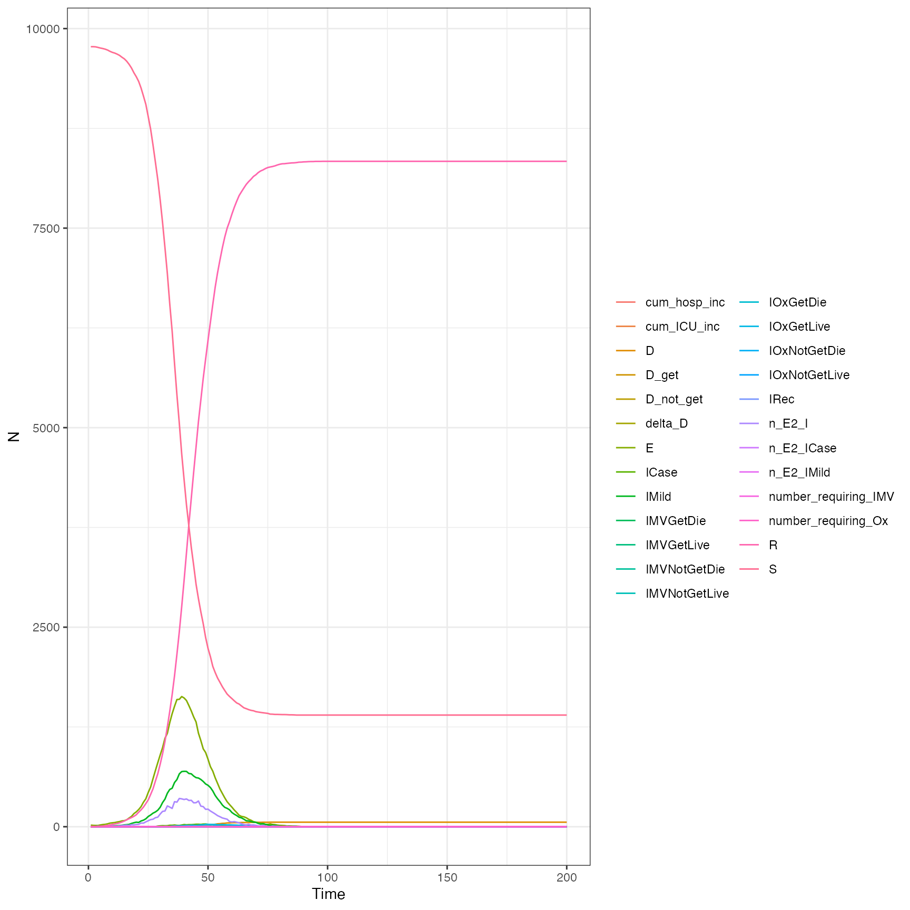

Validation.Rmd
# Create our population
iso3c <- "ATG"
pop <- hypatia:::get_population(iso3c)
# Scale it for speed
pop$n <- round(pop$n/10)
# Create our equivalent parameters
time_period <- 200
parameters <- hypatia::get_parameters(
population = pop$n,
contact_matrix_set = squire::get_mixing_matrix(iso3c = iso3c),
iso3c = iso3c,
R0 = 2,
time_period = time_period,
tt_contact_matrix = 0
)
# run our simulation - default timesteps = 200
df_1 <- hypatia::run_simulation(pop, parameters)
subtitle <- paste(
"Simulation for 1 run and 200 data points per run")
df <- dplyr::bind_rows(df_1, .id = "group")
statesnamevector <- c("human_S_count",
"human_E_count",
"human_IMild_count",
"human_IAsymp_count",
"human_ICase_count",
"human_IOxGetLive_count",
"human_IOxGetDie_count",
"human_IOxNotGetLive_count",
"human_IOxNotGetDie_count",
"human_IMVGetLive_count",
"human_IMVGetDie_count",
"human_IMVNotGetLive_count",
"human_IMVNotGetDie_count",
"human_IRec_count",
"human_R_count",
"human_D_count")
# Convert to long format
df <- tidyr::pivot_longer(tibble::as_tibble(df), all_of(statesnamevector))
strname <- "Hypatia Model Simulation"
subtitle <- paste(
"Simulation for 1 run and 1000 data points")
time <- seq(1, time_period, 1)
ggplot2::ggplot(
df, ggplot2::aes(x = timestep, y = value,
group = interaction(group, name), colour = name)) +
ggplot2::geom_line(size = 0.5) +
ggplot2::theme_bw() +
ggplot2::labs(title = strname, subtitle = subtitle) +
ggplot2::labs(y = "States", x = "time") +
ggplot2::theme(
legend.justification = c("right", "top"),
legend.box = c("horizontal", "vertical")) +
ggplot2::theme(
text = ggplot2::element_text(color = "#444444"),
plot.title = ggplot2::element_text(size = 26, color = "#333333"),
plot.subtitle = ggplot2::element_text(size = 13),
axis.title.x = ggplot2::element_text(size = 16, color = "#333333"),
axis.title.y = ggplot2::element_text(angle = 0, vjust = .5))Does it look similar to the squire output:
out <- squire::run_explicit_SEEIR_model(
population = pop$n,
country = "Antigua and Barbuda",
contact_matrix_set = squire::get_mixing_matrix(iso3c = "ATG"),
time_period = 200,
replicates = 1,
day_return = TRUE,
dt = 0.01
)
plot(out)
#> Warning in plot.squire_simulation(out): Summary statistic estimated from <10
#> replicates
#> Warning in plot.squire_simulation(out): Confidence bounds estimated from <10
#> replicates
Get the actual comparative outputs. - remove state IAsymp as this is not in SQUIRE
df_1 <- dplyr::select(df_1, -human_IAsymp_count)
hyp <- tidyr::pivot_longer(df_1, -1)
hyp <- dplyr::rename(hyp, t = timestep, compartment = name, y = value)
hyp <- dplyr::mutate(hyp, compartment = gsub("(^human_)(\\w*)(_count)", "\\2", compartment),
model = "hypatia")
hyp <- dplyr::select(hyp, c("t", "compartment", "y", "model"))
sq <- squire::format_output(out, unique(hyp$compartment))
sq <- dplyr::mutate(sq, model = "squire")
sq <- dplyr::select(sq, c("t", "compartment", "y", "model"))
ggplot2::ggplot(rbind(sq, hyp), ggplot2::aes(t, y, color = model)) +
ggplot2::geom_line() +
ggplot2::facet_wrap(~compartment, scales = "free")